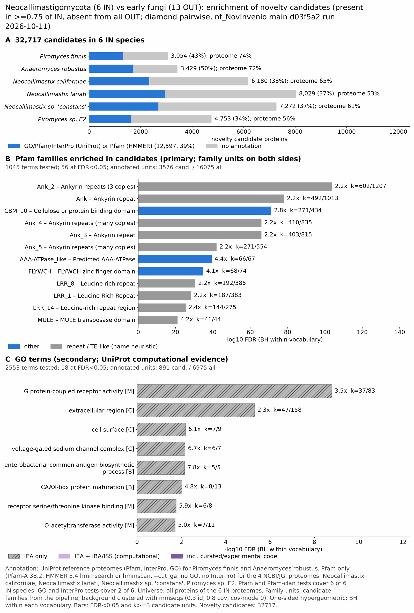

neocallimastigomycota vs early fungi: functional enrichment (novelty)
One-sided hypergeometric test per term; Benjamini-Hochberg FDR within each scope, level and vocabulary. Candidates are the novelty candidates: gene families present in the IN group and absent from the OUT group. Universe: proteome. Background clustered: True (76871 sequences in 25788 clusters, mmseqs easy-cluster --min-seq-id 0.3 -c 0.8). Family level: one unit per candidate family and per background cluster.
Sources: Pfam: 2026-01-27-Pfam38.2; InterPro entries: 110.0; GO: releases/2026-07-26; analysis generated 2026-10-14T10:48:39. Source tables: studies/fungi/neocallimastigomycota_vs_early_fungi/analysis/enrichment/outputs/proteome_clustered.
Full record: PROVENANCE. Run report: report.html.
- Annotation provenance is not fully recorded: PROVENANCE.yaml lists the per-species annotation files and their checksums, but not the UniProt release they come from.
- GO results are secondary. GO annotations include computational evidence (IEA, IBA); the GO evidence column shows if a term has non-IEA support.
- Candidate families (pipeline clustering of candidates) and background clusters (mmseqs clustering of the background proteome) are made by different runs, so family-level counts are not fully comparable.
- Low annotation: the candidate set has less than 50% annotation for Pfam 36.2%, InterPro 9.1%, GO 3.9%, any vocabulary 38.5%. Enrichment for these vocabularies has low power.
- GO and InterPro cover only 2 of 6 species: Pirofinn, Anaerobu. No GO and InterPro annotation for Neocalif, Neolanat, Neoconst, PiroE2sp; these species add no units to the GO and InterPro tests, so those results describe the covered species only.
Summary figure

Annotation coverage
Fraction of proteins with at least one term per vocabulary. Universe = all proteins of the species; candidates = the candidate set.
| Species | Set | Proteins | Pfam | Pfam clan | InterPro | GO | Any |
|---|---|---|---|---|---|---|---|
| Pirofinn | universe | 10768 | 67.0% | 56.0% | 73.5% | 57.1% | 73.9% |
| Pirofinn | candidates | 3054 | 31.0% | 25.5% | 42.7% | 19.3% | 43.1% |
| Anaerobu | universe | 12656 | 65.1% | 54.8% | 71.4% | 52.3% | 71.7% |
| Anaerobu | candidates | 3429 | 38.2% | 32.8% | 49.0% | 20.0% | 49.5% |
| Neocalif | universe | 20214 | 64.6% | 55.2% | 0.0% | 0.0% | 64.6% |
| Neocalif | candidates | 6180 | 37.7% | 32.2% | 0.0% | 0.0% | 37.7% |
| Neolanat | universe | 27675 | 53.2% | 45.2% | 0.0% | 0.0% | 53.2% |
| Neolanat | candidates | 8029 | 36.7% | 32.3% | 0.0% | 0.0% | 36.7% |
| Neoconst | universe | 23663 | 61.0% | 51.5% | 0.0% | 0.0% | 61.0% |
| Neoconst | candidates | 7272 | 37.0% | 32.1% | 0.0% | 0.0% | 37.0% |
| PiroE2sp | universe | 14612 | 55.8% | 46.7% | 0.0% | 0.0% | 55.8% |
| PiroE2sp | candidates | 4753 | 33.9% | 26.3% | 0.0% | 0.0% | 33.9% |
| ALL_IN | universe | 109588 | 60.1% | 50.8% | 15.5% | 11.7% | 61.5% |
| ALL_IN | candidates | 32717 | 36.2% | 30.8% | 9.1% | 3.9% | 38.5% |
Tests summary
Per vocabulary: terms with FDR < 0.05 / terms tested. Protein level counts proteins; family level counts candidate families and background clusters.
| Scope | Level | Cand. units | Pfam sig / tested | Pfam clan sig / tested | InterPro sig / tested | GO sig / tested |
|---|---|---|---|---|---|---|
| whole_set | family | 11296 | 56 / 1045 | 23 / 298 | 61 / 1060 | 18 / 2553 |
| whole_set | protein | 32717 | 223 / 4143 | 43 / 455 | 119 / 1978 | 100 / 3361 |
| Anaerobu | family | 2630 | 27 / 315 | 13 / 211 | 45 / 802 | 11 / 2209 |
| Anaerobu | protein | 3429 | 41 / 440 | 18 / 230 | 71 / 1048 | 49 / 2407 |
| Neocalif | family | 3930 | 32 / 539 | 18 / 227 | 0 / 0 (skipped_no_annotated_candidates) | 0 / 0 (skipped_no_annotated_candidates) |
| Neocalif | protein | 6180 | 58 / 919 | 20 / 287 | 0 / 0 (skipped_no_annotated_candidates) | 0 / 0 (skipped_no_annotated_candidates) |
| Neoconst | family | 4084 | 32 / 530 | 15 / 234 | 0 / 0 (skipped_no_annotated_candidates) | 0 / 0 (skipped_no_annotated_candidates) |
| Neoconst | protein | 7272 | 70 / 941 | 20 / 293 | 0 / 0 (skipped_no_annotated_candidates) | 0 / 0 (skipped_no_annotated_candidates) |
| Neolanat | family | 4508 | 36 / 540 | 17 / 233 | 0 / 0 (skipped_no_annotated_candidates) | 0 / 0 (skipped_no_annotated_candidates) |
| Neolanat | protein | 8029 | 66 / 950 | 22 / 295 | 0 / 0 (skipped_no_annotated_candidates) | 0 / 0 (skipped_no_annotated_candidates) |
| PiroE2sp | family | 3804 | 30 / 415 | 13 / 205 | 0 / 0 (skipped_no_annotated_candidates) | 0 / 0 (skipped_no_annotated_candidates) |
| PiroE2sp | protein | 4753 | 42 / 510 | 15 / 211 | 0 / 0 (skipped_no_annotated_candidates) | 0 / 0 (skipped_no_annotated_candidates) |
| Pirofinn | family | 2620 | 29 / 314 | 12 / 208 | 51 / 784 | 15 / 2189 |
| Pirofinn | protein | 3054 | 37 / 404 | 19 / 224 | 68 / 1002 | 31 / 2360 |
Top 25 Pfam terms (whole set, family level)
25 rows shown, ordered by FDR then p-value; 25 have FDR < 0.05 (bold).
| Term | Name | k / N cand. | n / M bg | Fold | FDR (BH) |
|---|---|---|---|---|---|
| PF12796 | Ank_2: Ankyrin repeats (3 copies) | 602 / 3576 | 1207 / 16075 | 2.242 | 1.52e-104 |
| PF00023 | Ank: Ankyrin repeat | 492 / 3576 | 1013 / 16075 | 2.183 | 8.21e-79 |
| PF02013 | CBM_10: Cellulose or protein binding domain | 271 / 3576 | 434 / 16075 | 2.807 | 6.27e-72 |
| PF13637 | Ank_4: Ankyrin repeats (many copies) | 410 / 3576 | 835 / 16075 | 2.207 | 1.09e-66 |
| PF13606 | Ank_3: Ankyrin repeat | 403 / 3576 | 815 / 16075 | 2.223 | 1.13e-66 |
| PF13857 | Ank_5: Ankyrin repeats (many copies) | 271 / 3576 | 554 / 16075 | 2.199 | 1.09e-42 |
| PF09820 | AAA-ATPase_like: Predicted AAA-ATPase | 66 / 3576 | 67 / 16075 | 4.428 | 4.06e-40 |
| PF04500 | FLYWCH: FLYWCH zinc finger domain | 68 / 3576 | 74 / 16075 | 4.131 | 1.40e-35 |
| PF13855 | LRR_8: Leucine rich repeat | 192 / 3576 | 385 / 16075 | 2.242 | 2.44e-31 |
| PF00560 | LRR_1: Leucine Rich Repeat | 187 / 3576 | 383 / 16075 | 2.195 | 5.20e-29 |
| PF23598 | LRR_14: Leucine-rich repeat region | 144 / 3576 | 275 / 16075 | 2.354 | 3.82e-26 |
| PF10551 | MULE: MULE transposase domain | 41 / 3576 | 44 / 16075 | 4.189 | 8.05e-22 |
| PF08011 | PDDEXK_9: PD-(D/E)XK nuclease superfamily | 37 / 3576 | 39 / 16075 | 4.265 | 2.24e-20 |
| PF12799 | LRR_4: Leucine Rich repeats (2 copies) | 110 / 3576 | 222 / 16075 | 2.227 | 1.74e-17 |
| PF02415 | Chlam_PMP: Chlamydia polymorphic membrane protein (Chlamydia_PMP) repeat | 28 / 3576 | 32 / 16075 | 3.933 | 4.67e-13 |
| PF04525 | LOR: LURP-one-related | 34 / 3576 | 45 / 16075 | 3.396 | 2.54e-12 |
| PF14223 | Retrotran_gag_2: gag-polypeptide of LTR copia-type | 29 / 3576 | 35 / 16075 | 3.725 | 2.54e-12 |
| PF00003 | 7tm_3: 7 transmembrane sweet-taste receptor of 3 GCPR | 66 / 3576 | 125 / 16075 | 2.373 | 4.39e-12 |
| PF14262 | Cthe_2159: Carbohydrate-binding domain-containing protein Cthe_2159 | 15 / 3576 | 16 / 16075 | 4.214 | 1.10e-07 |
| PF23745 | ANK_LRRK2: LRRK2 ANK repeat | 44 / 3576 | 85 / 16075 | 2.327 | 1.25e-07 |
| PF12784 | PDDEXK_2: PD-(D/E)XK nuclease family transposase | 21 / 3576 | 29 / 16075 | 3.255 | 6.01e-07 |
| PF01757 | Acyl_transf_3: Acyltransferase domain | 18 / 3576 | 23 / 16075 | 3.518 | 8.37e-07 |
| PF00150 | Cellulase: Cellulase (glycosyl hydrolase family 5) | 28 / 3576 | 46 / 16075 | 2.736 | 8.37e-07 |
| PF09223 | ZinT: ZinT (YodA) periplasmic lipocalin-like zinc-recruitment | 10 / 3576 | 10 / 16075 | 4.495 | 1.28e-05 |
| PF00011 | HSP20: Hsp20/alpha crystallin family | 28 / 3576 | 52 / 16075 | 2.421 | 2.79e-05 |
Top 25 InterPro terms (whole set, family level)
25 rows shown, ordered by FDR then p-value; 25 have FDR < 0.05 (bold).
| Term | Name | k / N cand. | n / M bg | Fold | FDR (BH) |
|---|---|---|---|---|---|
| IPR036770 | Homologous_superfamily:Ankyrin repeat-containing domain superfamily | 286 / 1933 | 555 / 9332 | 2.488 | 2.94e-59 |
| IPR002110 | Repeat:Ankyrin repeat | 264 / 1933 | 518 / 9332 | 2.46 | 2.63e-53 |
| IPR032675 | Homologous_superfamily:Leucine-rich repeat domain superfamily | 198 / 1933 | 400 / 9332 | 2.39 | 9.05e-37 |
| IPR002883 | Domain:CBM10/dockerin domain | 95 / 1933 | 181 / 9332 | 2.534 | 3.97e-19 |
| IPR001611 | Repeat:Leucine-rich repeat | 126 / 1933 | 280 / 9332 | 2.172 | 3.00e-18 |
| IPR009034 | Homologous_superfamily:Fungal dockerin domain superfamily | 93 / 1933 | 180 / 9332 | 2.494 | 3.00e-18 |
| IPR018631 | Domain:AAA-ATPase-like domain | 27 / 1933 | 27 / 9332 | 4.828 | 4.50e-17 |
| IPR011050 | Homologous_superfamily:Pectin lyase fold/virulence factor | 48 / 1933 | 67 / 9332 | 3.459 | 4.50e-17 |
| IPR000742 | Domain:EGF-like domain | 32 / 1933 | 43 / 9332 | 3.593 | 6.42e-12 |
| IPR003591 | Repeat:Leucine-rich repeat, typical subtype | 77 / 1933 | 166 / 9332 | 2.239 | 7.44e-12 |
| IPR055414 | Domain:Disease resistance R13L4/SHOC-2-like, LRR domain | 65 / 1933 | 131 / 9332 | 2.395 | 1.23e-11 |
| IPR007612 | Family:LURP-one-related | 18 / 1933 | 20 / 9332 | 4.345 | 5.04e-09 |
| IPR003368 | Repeat:Polymorphic outer membrane protein repeat | 20 / 1933 | 24 / 9332 | 4.023 | 7.10e-09 |
| IPR036305 | Homologous_superfamily:RGS domain superfamily | 31 / 1933 | 52 / 9332 | 2.878 | 7.47e-08 |
| IPR038595 | Homologous_superfamily:LURP-one-related superfamily | 16 / 1933 | 18 / 9332 | 4.291 | 7.69e-08 |
| IPR044926 | Homologous_superfamily:RGS, subdomain 2 | 29 / 1933 | 48 / 9332 | 2.917 | 1.47e-07 |
| IPR035992 | Homologous_superfamily:Ricin B-like lectins | 29 / 1933 | 52 / 9332 | 2.692 | 1.76e-06 |
| IPR012547 | Family:PD-(D/E)XK nuclease superfamily 9 | 12 / 1933 | 13 / 9332 | 4.456 | 3.76e-06 |
| IPR050647 | Family:Plant LRR receptor-like serine/threonine-protein kinases | 14 / 1933 | 17 / 9332 | 3.976 | 5.16e-06 |
| IPR050216 | Family:Leucine-rich repeat domain-containing protein | 45 / 1933 | 103 / 9332 | 2.109 | 5.58e-06 |
| IPR061502 | Domain:Copia/RE1/RE2-like, N-terminal domain | 11 / 1933 | 12 / 9332 | 4.425 | 1.45e-05 |
| IPR051848 | Family:Polygalacturonase-Inhibiting Protein | 18 / 1933 | 27 / 9332 | 3.218 | 1.49e-05 |
| IPR052595 | Family:Leucine-rich repeat-containing protein 69/Receptor-like | 16 / 1933 | 23 / 9332 | 3.358 | 2.75e-05 |
| IPR046959 | Family:Pollen receptor-like kinase 1-6/SFR4-like | 9 / 1933 | 9 / 9332 | 4.828 | 3.05e-05 |
| IPR017978 | Domain:GPCR family 3, C-terminal | 36 / 1933 | 81 / 9332 | 2.146 | 5.03e-05 |
Top 15 GO terms (whole set, family level) — secondary, computational evidence (IEA/IBA) included
15 rows shown, ordered by FDR then p-value; 15 have FDR < 0.05 (bold).
| Term | Name | k / N cand. | n / M bg | Fold | FDR (BH) | GO evidence | Families with non-IEA |
|---|---|---|---|---|---|---|---|
| GO:0004930 | molecular_function:G protein-coupled receptor activity | 37 / 891 | 83 / 6975 | 3.49 | 1.65e-09 | IEA_only | 0 |
| GO:0004888 | molecular_function:transmembrane signaling receptor activity | 37 / 891 | 85 / 6975 | 3.408 | 2.02e-09 | IEA_only | 0 |
| GO:0038023 | molecular_function:signaling receptor activity | 37 / 891 | 88 / 6975 | 3.291 | 4.85e-09 | IEA_only | 0 |
| GO:0060089 | molecular_function:molecular transducer activity | 37 / 891 | 90 / 6975 | 3.218 | 8.18e-09 | IEA_only | 0 |
| GO:0005576 | cellular_component:extracellular region | 47 / 891 | 158 / 6975 | 2.329 | 5.00e-06 | IEA_only | 0 |
| GO:0009986 | cellular_component:cell surface | 7 / 891 | 9 / 6975 | 6.089 | 0.007 | IEA_only | 0 |
| GO:0001518 | cellular_component:voltage-gated sodium channel complex | 6 / 891 | 7 / 6975 | 6.71 | 0.007 | IEA_only | 0 |
| GO:0005248 | molecular_function:voltage-gated sodium channel activity | 6 / 891 | 7 / 6975 | 6.71 | 0.007 | IEA_only | 0 |
| GO:0005272 | molecular_function:sodium channel activity | 6 / 891 | 7 / 6975 | 6.71 | 0.007 | IEA_only | 0 |
| GO:0034706 | cellular_component:sodium channel complex | 6 / 891 | 7 / 6975 | 6.71 | 0.007 | IEA_only | 0 |
| GO:0009246 | biological_process:enterobacterial common antigen biosynthetic process | 5 / 891 | 5 / 6975 | 7.828 | 0.007 | IEA_only | 0 |
| GO:0046378 | biological_process:enterobacterial common antigen metabolic process | 5 / 891 | 5 / 6975 | 7.828 | 0.007 | IEA_only | 0 |
| GO:0080120 | biological_process:CAAX-box protein maturation | 8 / 891 | 13 / 6975 | 4.817 | 0.010 | IEA_only | 0 |
| GO:0033612 | molecular_function:receptor serine/threonine kinase binding | 6 / 891 | 8 / 6975 | 5.871 | 0.017 | IEA_only | 0 |
| GO:0016413 | molecular_function:O-acetyltransferase activity | 7 / 891 | 11 / 6975 | 4.982 | 0.019 | IEA_only | 0 |
Actin cytoskeleton controls
Known actin-related families and how many of their proteins pass each filter. Protein ID columns are left out.
| control | pfam_ids | desc_regex | IN_universe | IN_in_matrix | IN_pass_ingroup_rule | candidates | near_miss_out1 | near_miss_out2 | n_Pirofinn | n_Anaerobu | n_Neocalif | n_Neolanat | n_Neoconst | n_PiroE2sp | n_Spizpunc | n_Batrdend | n_Powehirt | n_Geravari | n_Chytconf | n_Syncendo | n_Allomacr | n_Cateangu | n_Rhizdele | n_Mucocirc | n_Umbevina | n_Sacccere | n_Neurcras |
|---|---|---|---|---|---|---|---|---|---|---|---|---|---|---|---|---|---|---|---|---|---|---|---|---|---|---|---|
| Arp2/3 ARPC2 (P34-Arc) | PF04045 | 9 | 9 | 9 | 0 | 0 | 0 | 1 | 1 | 2 | 2 | 2 | 1 | 1 | 1 | 1 | 1 | 1 | 1 | 2 | 1 | 1 | 1 | 1 | 1 | 1 | |
| Arp2/3 ARPC3 (P21-Arc) | PF04062 | 9 | 9 | 9 | 0 | 0 | 0 | 1 | 1 | 2 | 2 | 2 | 1 | 1 | 1 | 1 | 1 | 1 | 1 | 2 | 1 | 0 | 1 | 1 | 1 | 1 | |
| Arp2/3 ARPC4 | PF05856 | 8 | 8 | 8 | 0 | 0 | 0 | 1 | 1 | 2 | 2 | 2 | 0 | 1 | 1 | 1 | 1 | 1 | 1 | 1 | 1 | 2 | 1 | 1 | 1 | 1 | |
| Arp2/3 ARPC5 (P16-Arc) | PF04699 | 9 | 9 | 9 | 0 | 0 | 0 | 1 | 1 | 2 | 2 | 2 | 1 | 1 | 1 | 1 | 1 | 2 | 1 | 2 | 1 | 1 | 1 | 1 | 1 | 1 | |
| Arp2/3 ARPC1 (description only) | arp2/3 complex.*(41|p41|subunit 1)|ARPC1 | 0 | 0 | 0 | 0 | 0 | 0 | 0 | 0 | 0 | 0 | 0 | 0 | 0 | 0 | 0 | 0 | 0 | 1 | 0 | 0 | 0 | 0 | 0 | 0 | 0 | |
| Arp2 / Arp3 (description only) | actin-related protein (2|3)\b|\bARP[23]\b | 33 | 33 | 33 | 0 | 0 | 0 | 6 | 7 | 7 | 6 | 7 | 0 | 6 | 6 | 7 | 6 | 6 | 7 | 13 | 7 | 7 | 6 | 7 | 7 | 6 | |
| WAVE complex NCKAP1 | PF09735 | 6 | 6 | 6 | 0 | 0 | 0 | 1 | 1 | 1 | 1 | 1 | 1 | 1 | 1 | 1 | 1 | 0 | 1 | 2 | 1 | 0 | 0 | 0 | 0 | 0 | |
| WAVE complex CYFIP (FragX_IP) | PF05994 | 7 | 7 | 7 | 0 | 0 | 0 | 1 | 1 | 1 | 1 | 1 | 2 | 1 | 1 | 1 | 1 | 0 | 1 | 4 | 1 | 0 | 0 | 0 | 0 | 0 | |
| WAVE complex ABI | PF07815|PF27594 | 0 | 0 | 0 | 0 | 0 | 0 | 0 | 0 | 0 | 0 | 0 | 0 | 0 | 0 | 0 | 0 | 0 | 0 | 0 | 0 | 0 | 0 | 0 | 0 | 0 | |
| SCAR/WAVE (SCAR_helical) | PF27569 | 5 | 5 | 5 | 0 | 0 | 0 | 1 | 1 | 1 | 1 | 1 | 0 | 1 | 1 | 1 | 1 | 0 | 1 | 0 | 1 | 0 | 0 | 0 | 0 | 0 | |
| WASP family (WH1) | PF00568 | 24 | 24 | 24 | 0 | 1 | 0 | 1 | 2 | 6 | 6 | 6 | 3 | 1 | 1 | 1 | 1 | 1 | 1 | 4 | 1 | 1 | 3 | 2 | 1 | 1 | |
| WH2 motif (WASP, WAVE, others) | PF02205 | 15 | 15 | 15 | 2 | 0 | 3 | 2 | 2 | 3 | 3 | 3 | 2 | 1 | 3 | 1 | 1 | 1 | 1 | 2 | 1 | 1 | 2 | 2 | 2 | 1 | |
| Formin FH2 | PF02181 | 52 | 52 | 52 | 1 | 0 | 0 | 7 | 7 | 11 | 11 | 11 | 5 | 4 | 4 | 4 | 4 | 5 | 3 | 9 | 3 | 9 | 8 | 4 | 2 | 1 | |
| Formin Drf_GBD / Drf_FH3 / Drf_DAD | PF06371|PF06367|PF06345 | 53 | 53 | 53 | 8 | 1 | 0 | 7 | 6 | 10 | 13 | 11 | 6 | 4 | 3 | 3 | 4 | 3 | 2 | 7 | 3 | 11 | 8 | 7 | 1 | 2 | |
| Ena/VASP (VASP_tetra) | PF08776 | 0 | 0 | 0 | 0 | 0 | 0 | 0 | 0 | 0 | 0 | 0 | 0 | 0 | 0 | 0 | 0 | 0 | 0 | 0 | 0 | 0 | 0 | 0 | 0 | 0 | |
| Coronin (description only) | coronin | 8 | 8 | 8 | 0 | 0 | 0 | 4 | 4 | 0 | 0 | 0 | 0 | 3 | 1 | 3 | 4 | 4 | 1 | 4 | 1 | 3 | 1 | 2 | 1 | 1 | |
| Cortactin (HS1_rep) | PF02218 | 0 | 0 | 0 | 0 | 0 | 0 | 0 | 0 | 0 | 0 | 0 | 0 | 0 | 0 | 0 | 0 | 0 | 0 | 0 | 1 | 0 | 0 | 0 | 0 | 0 | |
| Myosin 2 tail (Myosin_tail_1) | PF01576 | 10 | 9 | 9 | 0 | 0 | 0 | 2 | 1 | 2 | 0 | 3 | 2 | 1 | 1 | 1 | 1 | 1 | 1 | 1 | 0 | 0 | 0 | 0 | 0 | 0 | |
| Myosin head (all myosins) | PF00063 | 109 | 109 | 109 | 0 | 0 | 0 | 14 | 12 | 24 | 23 | 24 | 12 | 9 | 7 | 9 | 7 | 13 | 6 | 21 | 8 | 19 | 17 | 8 | 5 | 4 |
Page written by bin/generate_enrichment_page.py.